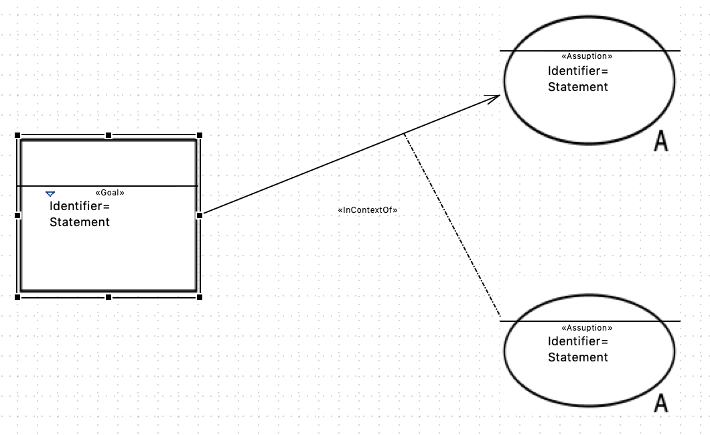

The GSN plug-in allows the user to create n-ary associations between the elements of the diagram. The same constraints apply for the standard associations and their n-ary variants.
In order to create an n-ary association, you first have to create a standard association of the desired type (IncontextOf or SupportedBy).
You will be able to add more branches to the association by selecting the n-ary variant of the selected association (N-aryIncontextOf or N-arySupportedBy) in the Palette and drawing an association starting anywhere along the line of the previous association.
